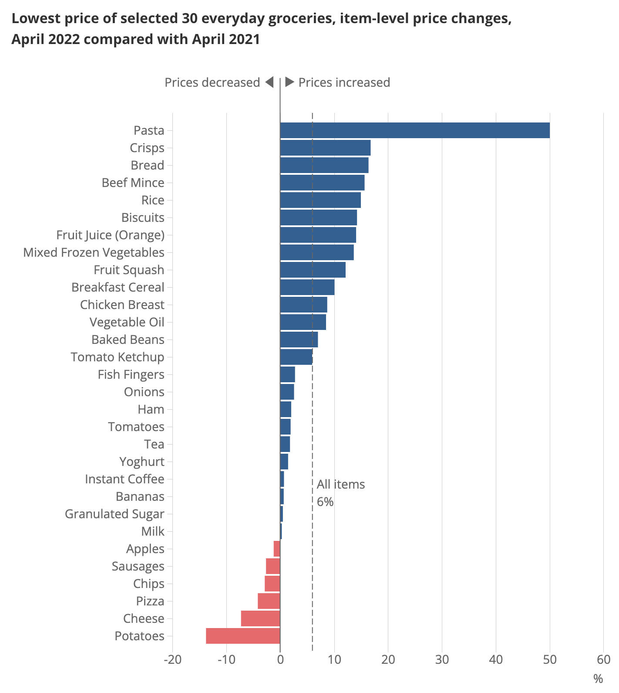
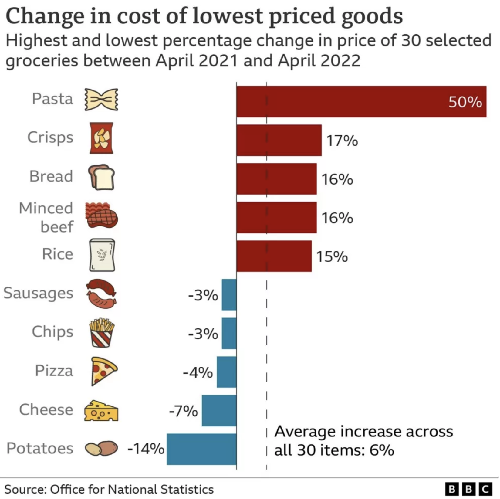
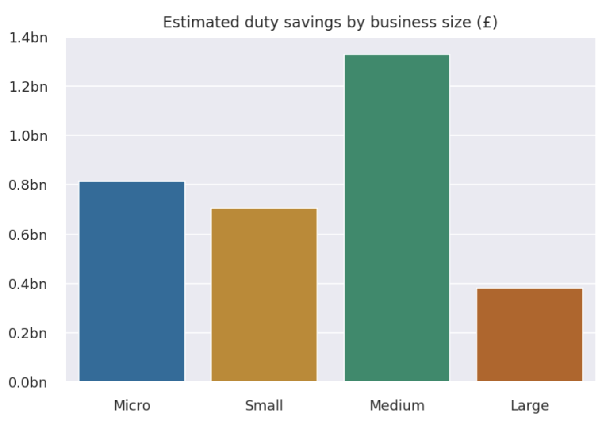
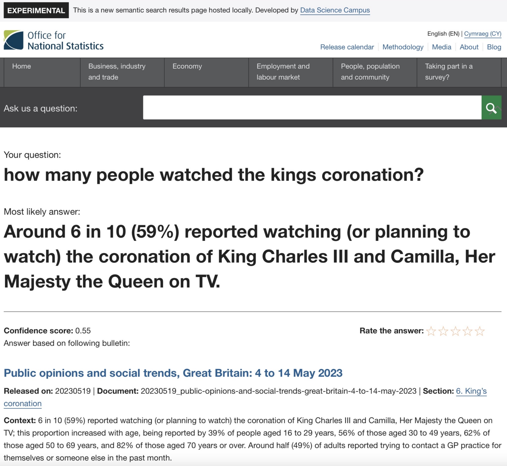
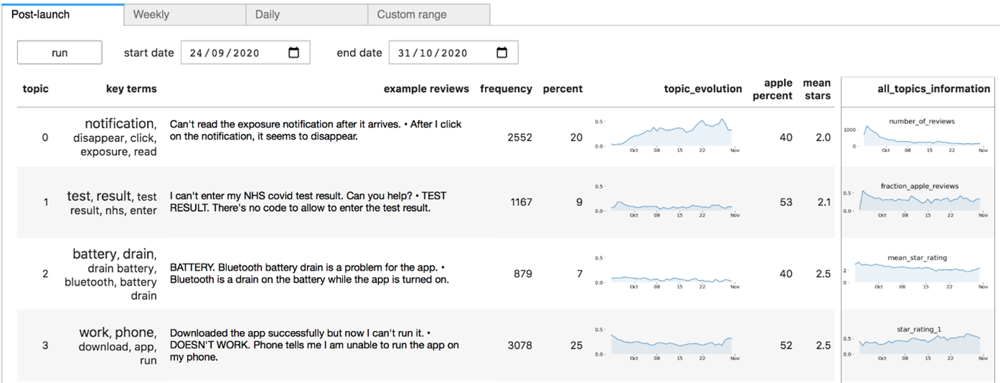
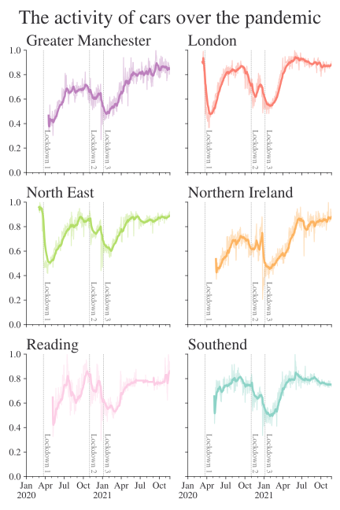
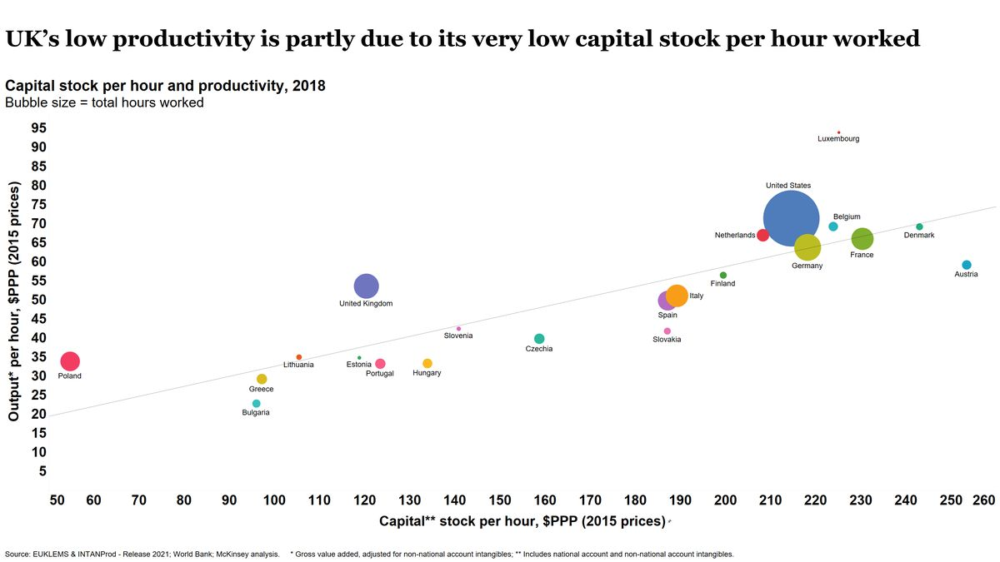

I was recently asked to give a talk at No. 10 Downing Street on the topic of data science with impact and, in this post, I’m going to share some of what I said in that talk. The context for being asked is that the folks in 10DS, the Downing Street data team, are perhaps the most obsessed with having impact of any data science team I’ve met–so even though they’re the real experts on this topic, they’re very sensibly reaching out to others to see if there is anything extra they can learn.
There are plenty of caveats to the below—it’s just my take and I’m not claiming to have definitive answers; I’m sure management experts have much more to say on the general topic. But I’m not sure many others have talked about how to do data science with impact in the public sector, so hopefully that angle is useful and new. One limitation: a lot of my thinking is informed by working in the UK’s Data Science Campus as Deputy Director and then Acting Director, and so may be overly occupied with whether to undertake this or that data science project as compared with the decisions needed to be taken by data science teams in more operational areas. Throughout, I provide concrete examples and links to more detail on them. Any mistakes in referring to Campus projects, and the views expressed below, are very much my own.
What impact is
For me, to first order, data science with impact is data science for the public good. In other words, you must be able to articulate how a new project or process will benefit the public once complete.
Inevitably, this prompts the question “what constitutes public good?” My very high-level mental model is that it’s a simple calculation1 of
1 At the risk of sounding like an effective altruist.
\[ \text{number of people affected } \times \text{ impact on people} \]
where the impact on people is the net present value of the improvement to their life. For want of a better description, let’s call this the impact equation. If you’re not familiar with net present value, the equation is
\[ \text{NPV} = \displaystyle\sum \frac{R_t}{(1+i)^t} \]
which is to say it is the sum of the “returns” at time \(t\) (where \(t\) is number of time steps into the future), \(R_t\), discounted by rate \(i\) for \(t\) steps into the future.
What does this equation mean in practice? Don’t let the urgent crowd out the important, despite the strong temptation to only look directly in front of you when you’re working at a policymaking institution buffeted by short-term headwinds. It also means you should look for the timeless angle in everything you do—even while you’re solving an urgent problem.
To be a bit more concrete about how this applies when doing data science, open-sourcing the code you’re using is a great way to make that urgent problem you’re working on more timeless. While you may never pick that code up again, someone else just might. Likewise, blogging about what you did—even in a very matter-of-fact way—can help those who come after you with a similar problem get started more quickly. It also points to thinking carefully about the ongoing maintenance costs of what you’re producing—one reason why dashboards, one of the most requested data science products, can get down-rated when looking through this lens.2
2 Everyone thought the UK Health Security Agency’s COVID-19 dashboard was fantastic, and so it was. But did you know there was a whole team behind it, ensuring it was kept usefully up to date? Dashboards need considerable resources to stay relevant, accurate, and useful.
Let’s turn to the first of our examples of delivering public good using data science.
Example of public good: least cost grocery index
In January 2022, food campaigner Jack Monroe put out a tweet that garnered huge press coverage. The tweet read
Woke up this morning to the radio talking about the cost of living rising a further 5%. It infuriates me the index that they use for this calculation, which grossly underestimates the real cost of inflation as it happens to people with the least. Allow me to briefly explain”
and quickly raked in 60,000 likes. Just as quickly, Jack was invited onto breakfast news programmes to talk about how price rises were hitting the poorest in society.
The idea she was sharing is simple and compelling, which is also probably why it caught on in the public debate, especially as the cost of living was a major concern at that time. Jack’s point was that inflation as measured by the UK’s Office for National Statistics (ONS) is measure of the change in average prices not a measure of the change in the lowest prices. She gave some examples from her own experience, like a budget bag of pasta increasing from 29p to 70p.
Jack had a point: as the ONS’ website puts it, “A convenient way to understand the nature of these statistics is to envisage a very large shopping basket comprising all the different kinds of goods and services bought by a typical household.” A typical household is not one that is only buying the lowest cost versions of all products—but households at the bottom of the income distribution might be. So it is possible that the very poorest households could face a different inflation rate.
At the time this was happening, I was working at the Data Science Campus at the ONS, and myself and some other ONS colleagues—most notably Matt Corder and Abi Casey—decided that ONS could not and should not stay silent. If we weren’t going to talk about inflation when it was on breakfast TV, when would we talk about it? Against some weak external and considerable internal resistance, we persuaded the rest of the organisation that we should create a lowest-cost grocery index. This index would speak directly to Jack Monroe’s question, a question that, by this point, was at the heart of the public debate. There was no time to lose if we were going to fill the information vacuum before poorer quality data and analysis did.
The traditionally collected basket of goods used in the CPI (consumer prices index) measure of inflation did not explicitly include budget items, making the analysis potentially impossible. Fortunately, some forward-looking colleagues had already laid the groundwork for us by setting up the automatic scraping of prices on supermarkets’ websites (with the blessing of those supermarkets). Working together across the Campus and Prices areas of ONS, we used the web-scraped data to create a new “least cost” grocery index.
The index was constructed based on a limited number of products (30) because the analysis needed to be ready quickly in order to inform the public debate: ie this work had some element of urgency. Even then it took from January to April to do. The items were chosen using data from the Department for Environment, Food and Rural Affairs (DEFRA) 2019/20 Family food datasets, which allowed us to identify the grocery items most likely to be bought by households on low incomes. The results are in the figure.

How does this fit in with data science for the public good? The first way is that this story, about the cost of living, reached (and was relevant to) a large number of people. While only some households were directly affected by the inflation in the lowest cost items, many were concerned—and therefore interested. Although it wasn’t certain, we knew there was a good chance this analysis would be big news, and indeed the lowest cost grocery index was picked up by all the major news shows and newspapers. In the Campus, we knew it was a hit, because we were asked to put it on the ONS website rather than the Campus’ website (albeit with a “highly experimental” label).3
3 An example of what I like to call the Campus’ Andy Murray problem.

This story reached a large number of people, and, for some, it hopefully affected them too: by validating their experience but also pointing to the items that had fallen in price. It also showed that the next cheapest product was often a substantially more (20%+) than the cheapest and arguably influenced supermarkets to focus more on their budget lines.
Thinking about that term in the impact equation that looks into the future, there’s also an element of timelessness in this urgent work: we set a precedent for producing a least cost index, and we created the code to do it. Which means that that a similar analysis can be run again whenever needed. And, indeed, in October of 2022, the index was run again. There was a resource cost in doing this, but it was far lower than for producing the initial work.
Considerations for having impact with data science projects
Is a data science team the best option?
Different types of teams will be more or less productive working on different kinds of tasks. Tackling only the problems for which data science teams are uniquely well-placed is going to give more bang for the buck.
Economists will be familiar with the idea of comparative advantage. To put it succinctly, the idea is that it’s economically efficient to do the thing that you are uniquely best at (rather than the thing you are best at overall, or, more obviously, the thing you are bad at). I know some people who are excellent economists who are also excellent data scientists. Right now in the world, it’s easier to find excellent economists than it is excellent data scientists, so those people should probably focus on data science—even if they’re better at economics than most economists.
Sometimes a data science team will have a comparative advantage in doing a project or running a process. For example, if a project simultaneously requires skills in coding and analysis, data scientists are uniquely placed. If all that is needed is coding, maybe a team of software developers would be better though—by which I mean they could have more impact per unit of input of effort.
In the example of the least cost grocery index, there was probably no other organisation in the UK that was better placed to produce the analysis than ONS: it took a combination of already collected supermarket price data, data science skills to track budget products over time, and inflation methodology skills, not to mention all of the stakeholder management and communication skills needed to land such a high profile analytical project with the general public. Of course, it also hugely helped that ONS is an authoritative voice on all things inflation.
Comparative advantage can take forms other than skills. Working in government, I frequently found that there were gaps between departments’ briefs or, even more commonly, co-ordination problems because of overlapping briefs. There’s nothing inherent about a data science team that would make it well suited to solving co-ordination problems. But, in the Data Science Campus, we had an explicit mandate to look across the entire public sector. And one way we could add value relative to what departmental data science teams were doing was to solve some of those co-ordination problems and bring people working in different departments (or their data) together. Which leads to the next example.
Example of being the right team and solving co-ordination problems: preference tariff utilisation rates
Preferential trade agreements (PTAS) are used to promote international trade, and we know that international trade brings a bunch of benefits beyond only trading domestically. All else equal, lowering the transaction costs of international trade is helpful—and firms making use of preference tariffs face lower transaction costs. But, previously, there was little information on the extent to which UK firms were making use of these cheaper tariffs.
The problem was that these data lay across several different datasets housed by different UK government departments. I won’t go into the details here because you can read about it at length in blogs on the Data Science Campus, but the short version is by combining data from HM Revenue and Customs (HMRC) (on trade in goods), the Inter-Departmental Business Register, and International Trade Centre’s Market Access Map, it was possible to estimate the underuse of tariffs: essentially to work out how much money UK firms were leaving on the table.
The results involve significant sums that firms are, apparently, spending unnecessarily. The work did not establish whether this was simply because firms were unaware of the tariffs or were aware and but refrained because the costs associated with the bureaucracy of the preferential tariffs meant it wasn’t worth using them. But it did tell us that this was occurring for tens of thousands of firms (“people” in our impact equation) and billions of pounds (depth of effect in our equation). And, just like the least cost index, there is plenty of replay value to be had in re-running this analysis—especially following any interventions.

Portfolio construction
When creating a portfolio of data science projects, you should think about it like any other portfolio. Some projects may be more risky, but have a higher potential pay-off. Some will be dead certs but with limited upside. Rightful scrutiny of how money is spent means that very few have the luxury of only going for high risk, high reward projects. (Although you can see this is how some industries end up being more dominated with the relatively better off—they have a safety net.) Being pragmatic, you’ll need a mix of projects to keep everyone happy.
This applies in time too: the reality of most of the public sector is that you can’t have projects that take years to come to fruition. In some places, you might be lucky to have weeks. There’s an old joke about a department that shall remain unnamed: Q: “what do they call research?” A: “Anything that isn’t due tomorrow.” To keep everyone happy, and to ensure you really are delivering, it’s wise to have a portfolio of projects that will keep delivering wins in a steady stream so that there aren’t long fallow periods.
In small data science teams, this can be hard, simply because it’s hard to play a numbers game with small numbers of projects / staff / FTE. In this case, you need to think carefully about what the tolerances are around delivery. But the general principle of going for a steady stream of projects with some big, some small, some which maybe don’t work at all, holds.
Building human or physical capital
Data science is rapidly changing, with new or upgraded technologies appearing all the time. Simply staying on top of developments takes up a lot of time—but staying on top of developments is also critical for ensuring that the portfolio of projects you choose to undertake is as impactful as it can be.
Because of this dynamic, projects that top up or build human (or physical) capital may have strategic benefits for long-term impact. In taking on a project partly to build human capital, you’re explicitly targeting the future stream of returns in the impact equation but taking a hit on the \(1/(1+i)^t\) part.
Example of building human capital: StatsChat
Artificial intelligence and machine learning are critical parts of data science, and staff at the Campus followed the developments in large language models such as ChatGPT with excitement. In the UK context, it very quickly became clear that there was huge interest across the public sector in large language models—and it would only be a matter of time before the Campus would be asked to do a project involving a large language model.
Rather than wait for the call, we took a decision to proactively get some experience with large language models4 by creating an experimental website search function based on LLM-related technologies. Those of you familiar with the ONS website will be aware that the search functionality is, erm, less than optimal and this isn’t the first time the Campus has attempted to provide better search tools that central ONS services could use to improve the website.
4 A lot of the credit for pushing this forward goes to my former colleagues in the Data Science Campus; while I was an early and enthusiastic supporter, they did all of the work. Ed Sherman and Andy Banks, plus Andy’s team, were key in making StatsChat happen.
The team built a demo app that, in examples, seems to dramatically improve the experience of using the ONS website while minimising the potential issues of LLMs, such as hallucinations. You can read more about the project in this blog post, but the basic steps were:
- create a document store of every publication on the ONS website with accompanying metadata
- partition documents into chunks of roughly 1000 characters and converted these into vector embeddings using a sentence transformers model
- run an embedding search algorithm to collect the most relevant web pages from a given user query
- finally, use a generative question-answering (GQA) model to turn the most relevant retrieved documents into a concise and naturally phrased answer
The project is very impressive. In one example, a user asks “how many people watched the kings [sic] coronation?”, and StatsChat correctly retrieves the information that “Around 6 in 10” people watched or planned to watch it.

Following this exploratory project, the team is in a much better place to use LLMs in future. And having a ready-made, cutting-edge improvement to the ONS’ website just waiting to be implemented by the Communications department isn’t a bad side outcome either. You can find the code here.
The ways that data science can have impact
So far, we’ve looked at what impact with data science means and at some impact-related considerations around what projects data science teams take on. Now we’re going to look at the ways that data science work can have impact. I usually think of three:
- Saving time or money in what’s already happening.
- Enabling higher quality in what’s already happening.
- Enabling new things to happen.
Saving time or money
This is pretty simple: data science can enable an organisation to do things faster, cheaper, or with less human labour. There are a bunch of examples you could pick on but automating data processing that would otherwise be done manually is the one that occurs extremely frequently in analytical functions. A typical case would be updating a forecast with the latest data: how many forecasting organisations do this via manually updated spreadsheets? With data science (cloud computing, orchestration tools, code) you can schedule data processing jobs to happen whenever a website (perhaps that of a statistical office) is updated. Instead of tying up staff time on manual updates, the updated forecast can just take care of itself—leaving more time for thinking. There’s a book about Python called “Automate the Boring Stuff”, and I think that sums it up pretty nicely: with the boring stuff automated, people can focus on where they add value the most, which is usually more about thinking and strategy.
Enabling higher quality
There are so many examples where data science might improve quality. I’ve written recently about how model registries can reduce model risk for organisations. Data science tools for checking data for issues, like Great Expectations, or for proactively finding examples that break code, like hypothesis, have come on leaps and bounds. And switching from risky spreadsheets to easily auditable version-controlled code represents a phenomenal increase in quality (via a decrease in mistakes).5
5 It’s very possible to make mistakes in code too, but the use of tests, version control, and the separation of data and logic make—in my view—analysis based on code inherently much less risky than analysis in spreadsheets. Every few months there is a massive spreadsheet-related data leak or costly mistake. Some of these are curated in the “horror stories” section of the European Spreadsheet Risks Interest Group.
As a specific example, the Campus was asked to help with the NHS (National Health Service) Covid App. For those not familiar with the UK context, this app was promoted to the population at large and was very widely used during the Covid-19 pandemic. As such, it collected huge amounts of feedback (good and bad) via both the Apple App Store and the Google Play App Store. Due to the scale of use of the app, there was too much feedback for even a substantial team to read through it all.
A team from the Campus worked with the NHS to use a data science method, called topic modelling, and a data science tool, a dashboard, to help software developers triage the most impactful issues so that they could be fixed first.
You can read more about this project here, but the bottom line is that there were limited resources to work on the app but the data scientists involved were able to ensure that these resources were focused on improving the app’s quality in the most impactful way. They did this by using data science methods to capture common themes even if the people reporting them had used quite different phrasing. One innovation that was particularly helpful to developers was the ability to spit out a ‘canonical’ feedback text for each emerging topic: this stated the problem in plain English. The pipeline was run in the cloud.
Without the data science, improvements to the app would still have happened, but they would have had less impact.

Enabling new things to happen.
Data science opens up possibilities that simply did not exist before. This could be new analysis, measurement, and insight, but it could also be ways to deliver public services. I’m very taken with the example of the French tax authorities using satellite data to detect undeclared swimming pools —something that would not have been possible before.
As a really good example, let’s look at how staff at the Data Science Campus developed new measurements of population mobility during the Covid-19 pandemic. At that time, policymakers were desperate for high frequency measures of mobility because mobility is a key determinant of how easily the virus is able to spread and because existing official statistics were released with a substantial lag.
In the UK, there are a large number of publicly-owned, publicly-accessible CCTV feeds. So Campus staff set up a cloud-based automatic data processing pipeline that:
- every ten minutes, woke up thousands of (virtual) cloud computers to draw down thousands of stills from CCTV cameras
- ran an anonymisation algorithm on the images (blurring faces and vehicle number plates)
- used a machine learning algorithm to recognise moving pedestrians, cars, vans, and cyclists and create counts of them
- ran imputation algorithms on any missing data
- aggregated those counts to the city level
- put the counts into a storage database
- periodically sent data from storage to statisticians at ONS to publish on the website (daily frequency data)
Incredibly, this automatic cloud-based pipeline producing entirely new statistics with national urban coverage costs around £20 a day. To put this into context, and as best as I can determine from publicly available information, the Defra Environmental Survey costs ONS around £300 a day to run (averaged over a year). You can see the results for yourself in the figure below, read about the project in more detail here, check out the code here, or download the stats here.

It’s worth mentioning that this project would simply not have been possible without the use of cloud. Public sector institutions looking to get the most value from data science absolutely must empower their data scientists with cloud technologies. You can read more about unleashing the full productivity of data scientists with cloud in this blog post.
The traffic cameras project is a clear cut case of data science enabling something entirely new, in this case policy-relevant statistics.
Channels for data science to have impact
In this section, I look at exactly how the benefits of quality, savings, or new work happen, ie the channels through which data science can have impact. This is very much not comprehensive, but some main ones are:
information, to help people (the public, policymakers, whomever) make better decisions. The NHS app and the least cost grocery index are examples.
supporting operational changes or procedures that will save money or improve welfare. Making operational changes is hard. One example, still in its early days, is improving the speed and accuracy of GDP statistics on public expenditure through the analysis of transparency declarations. You can read more about this work here, but the bottom line is that expenditure by the public sector currently drops into the UK’s statistics office with a lag of around 9 to 12 months. By using transparency declarations, that is data on spending that is published by government departments and councils due to legislation, in addition to the usual collection methods, it might be possible to get that down to three months. The operation here is the assembly of national statistics. Other examples are helping to decide the placement of ambulances around rural areas to minimise response times, or deciding which buildings to prioritise for fire inspections to minimise the chances of fires breaking out.
teaching a person to understand data science so that they may go on and deliver benefits themselves. Clearly, if you teach 100 data scientists, and they all go out and do good, that’s going to be a bigger impact than if you just try and do everything yourself. At the Campus, we provided data and data science training of one form or another to 1000s of public sector workers a year. But it’s not just about teaching people to do data science, it’s also about helping senior leaders understand how they can use data science to achieve what they need to, and what sensible questions to ask of data or, indeed, data scientists. Many senior leaders will have heard of large language models by now, but they are far less likely to have heard of ETL (extract, transform, load) and automation tools that could have a much bigger impact, at least in the short run. My personal efforts in this space include Coding for Economists and Python for Data Science, aka Py4DS.
Delivering data science
This is a bit more about projects in general than the previous sections: what can you do to ensure the delivery of a data science project? There are a few factors that I take into account when trying to judge.
Working Backwards
The first is to work backwards from the intended outcome, aka “working backwards”, as popularised by Amazon. In Amazon’s prescription, the steps are to:
- Start by drafting the press release stating the outcomes you’ve achieved
- Evaluate the opportunity—is it worth doing? (This goes back to the impact equation.)
- Discover solutions and get stakeholder approval.
- Build the high-level road map and identify themes.
- Create the backlog and assign tasks.
I think this is a good general guide but it’s also worth noting that some data science projects are highly exploratory or experimental, and it can be hard to have a roadmap or backlog up front. Uncertainty is fundamental in research. Amazon has certainly been able to use this model to innovate and deliver plenty though!
Talk is cheap
As part of evaluating the opportunity, I think it’s also good to ask: is the need plausible? Talk is cheap: quite often you’ll find folks saying they’re desperate for this or that data science project but they do have an incentive to get you to work on their thing rather than anyone else’s and you should question where those resources would really be best deployed (it could be in a project that no-one asked for). There are a few questions you can ask to sniff out how much of a priority a project really is for an instituion. Have other avenues been exhausted? Is there a maintenance plan in place? How long will it be used for? (That one goes back to the impact equation.) You need to be able to see the connection between the project and the outcome, and asking ‘how will this be used in practice?’ can illuminate the channels for the impact to happen. ‘How will it be used in practice?’ is particularly good at filtering out dashboards.
Feasibility
Feasibility is important too, and it’s not just a binary question—there are shades depending on what inputs will be available in addition to the core one, the labour of data scientists.
First, there’s often a very real question about whether the right data are available. It’s incredible what some organisations will spend on staff to then scrimp on data, even when they should in principle know about production functions. And the data don’t just need to exist, the permissions need to be in place. A data scientist’s strength is not in legal wrangling over data access, and you should clear such hurdles with the help of legal professionals in advance of a data scientist going anywhere near the project.
Likewise, organisations that spend huge sums on wages can skimp on capital, limiting the productivity of data scientists. Tera Allas, Director of Research and Economics at McKinsey, has made this chart showing how it’s a particular issue in the UK.

It’s always wise to check what capital is available before agreeing to a project. For example, at the Campus, we would downrate anything that had to be done on a particular legacy system because data scientists working on it reported that everything took 20 or 30% longer as compared to the best alternative system. Lower productivity means fewer projects means less impact, not to mention frustrated staff. You can do some simple back-of-the-envelope estimates that strongly suggest that skimping on hardware for data scientists makes poor business sense.6 Because of the constraints of most enterprise IT systems this effectively means that anything where data scientists are in control of their own software and hardware, eg on cloud, looks relatively much more attractive—you can simply get more done. In the case of cloud, the monetary costs could be lower than using traditional on-premises hardware, though it does depend on what you’re doing and how carefully you’re doing it.
6 A note on that back-of-the-envelope argument for investing in better capital for data scientists. The hardware used in many public organisations looks, at best, like a 1TB SSD, 16GB RAM, i7 touch laptop or surface running Windows. A quick check shows that these come in at £1500 and £2200 respectively from a major provider. For our high-end laptop, we’ll go for a 14-inch M3-chip MacBook Pro that can run small large language models locally (!) and has 24GB of RAM plus a 1TB SSD, which costs £2300. This is more RAM but also each GB of RAM is more performant in a Mac. Let’s say the cheaper hardware has three incidents a day where something glitches, crashes, or goes slow enough to pause a workflow and, on average, this causes three minutes of lost time during each occurrence. Now, imagine the average data scientist costs a business £74k a year (with pension, National Insurance, etc, etc) and works 7.5 hours a day, so 65p per working minute. This makes the cost of that lost time £1480 per year, compared to spending £100 to £800 more to get the higher end laptop. That’s just one year too: as far as I can tell, mid-range laptops usually last around three years while higher end laptops last more like five years–with some reports suggesting Apple laptops last even longer than this. So it’s worth it even before we add on the other costs of worse capital, such as poorer staff retention. At the Campus, we issued most staff with MacBooks.
Constraints and dependencies
My point here about giving data scientists agency in the capital they use applies more generally too: what other constraints and dependencies are there? To state the obvious, optimisation under constraints is harder than optimisation. If there’s a constraint around using a particular system, it will be harder to have the same impact, all else equal. If there’s a critical dependency on another organisation over which you have is limited control, or if that org has limited incentives to help, it’s going to be harder to have impact than if the only dependencies are internal.
Dependencies can be a big problem in the public sector because there are frequently a very large number of stakeholders. Let’s say there are \(N\) of them. Each big decision then needs to go through \(N\) people, and a problem with a single stakeholder could hold up the entire project. If you have \(M\) distinct decisions or changes in plan, you might be looking at as many as \(N \times M\) meetings simply to get a “yes” for everything in the best possible scenario. It’s even worse when there’s a web of dependencies. This simple arithmetic is one reason why it can be more efficient to gather stakeholders together at a single, regular event or even to just stick a website up and tell them to check it and report issues (if you have the luxury of talking about your project publicly while it’s still in train).
Apparently, Amazon worked hard to remove dependencies between teams to avoid this problem. Part of that was the Bezos Mandate that introduced APIs (find out more about APIs here) and service level agreements to reduce frictions in teams needing to liaise with one another just to get basic tasks done. The benefits of service interfaces go well beyond data scientists and it’s worth reading about the Bezos Mandate if you haven’t come across it.
Potential for change
On a more strategic level, it’s important to ask: what genuine policy change or operational improvement will this result in? This is one of my great fears with dashboards. The information is beautifully presented to a decision-maker: so what? Do they have the power to actually make a change based on the new information?
Again, a more strategic point: will this problem still be the most important thing to work on by the time the project is complete? What we’re looking for here is some time consistency. The bruising nature of policy is that things move on fast, often faster than data science solutions can be put in place. Perhaps those solutions will be needed again in the future, and that should change the calculation. But there are going to be examples where the solution arrives too late to generate impact.
Incremental delivery
A major, major mistake I see repeated all the time in technology-leaning projects is trying to create a one-off, monolithic project will solve everything in one fell swoop. To see why this is a bad approach, imagine if, instead of trying to construct the world’s first computer to do basic arithmetic, the early engineers who built the ENIAC had decided to jump straight to building the latest smartphone. Inevitably, they would have failed. The knowledge of what works and what adds value in computing has been built up over decades of trial, error, and refinement.
The alternative that I believe delivers more impact overall is changing tack frequently in light of new information and chasing the highest value-add interventions first. To do this, projects need to be broken down into phases. You see it in software development all the time: add new feature, see if it helps, iron out bugs, repeat; You might even have developers working in separate branches of the same code base, making their contributions fully distinct and modular. At each phase, you have an opportunity to pause to re-evaluate the potential impact, to change course if necessary, or, and here’s the hardest part, to kill the project if you need to. It’s hard to stop projects before “completion” because we’re human and we get invested in the things we are doing. But sometimes it’s much better to acknowledge that it’s not going to deliver the way you thought, and to kill it in favour of moving onto more fertile ground. In particular, you want to avoid the situation where someone goes off for months and months without re-evaluating the project because the chances are that, despite their best intentions, they’ve veered off from the most impactful course.
There are some differences with data science that mean this approach is even more valuable. Lots of people don’t understand the strengths and weaknesses of data science, and how it can be most effectively be used: they might ask for something initially but gradually realise that another approach would serve them better. The fast paced nature of progress in data science also means it’s best to constantly re-evaluate.
In many ways, I’m arguing for an agile approach here, but it doesn’t have to be “Agile” with a capital “A”. The point is that incremental delivery is—in most cases—the best way to wheedle your way to impact with a data science project.
Concluding remarks
Hopefully this has been a helpful deep dive into how best to have impact with data science but there’s a lot more that could be said on the topic, and I’d be delighted to read other thoughts if you have them!